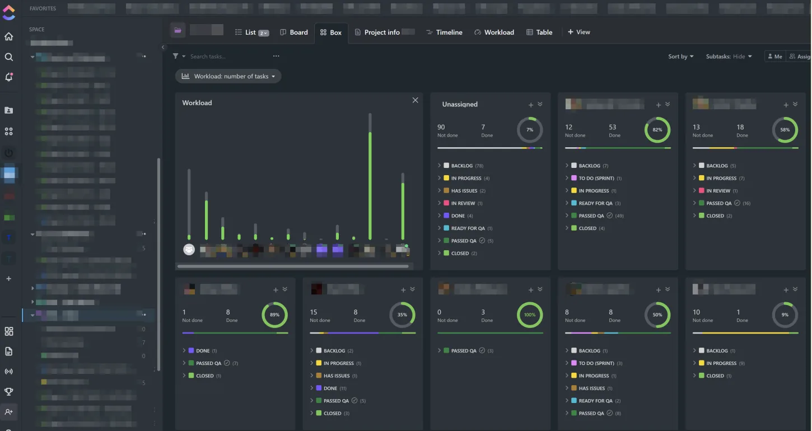

Habr
Часть 2. Почему система управления в проекте — это не просто «доска задач». От проблем к решениям

Практическая статья о системе управления проектом и переходе от разрозненных задач к управляемому исполнению.
Моя роль
Автор — Роман Мироничев / RomarioHabr.
Открыть оригинал ↗